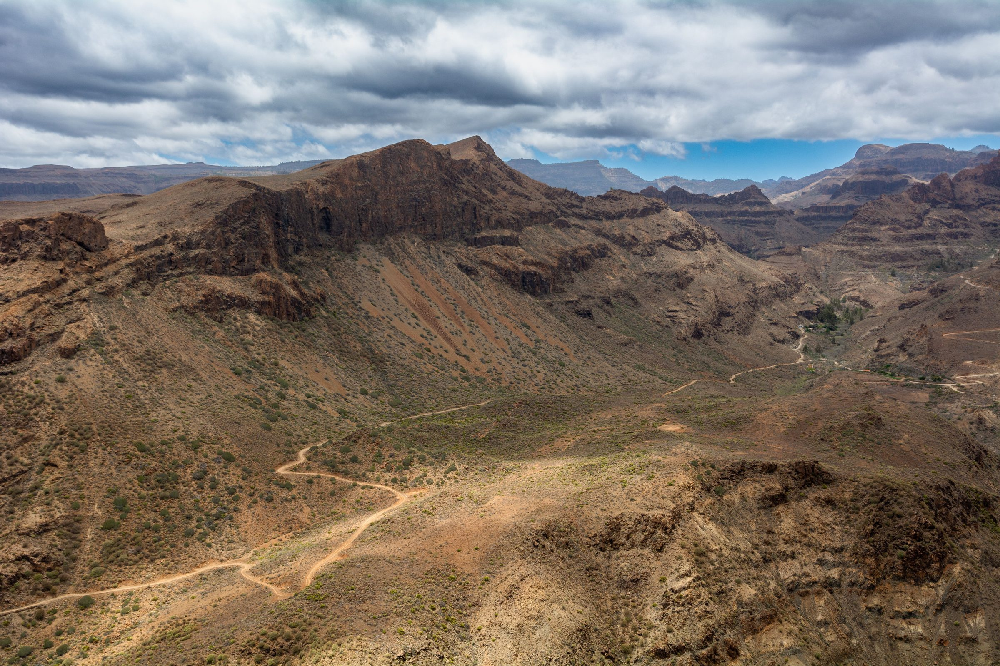

Cómo llevar la ruta en el móvil y seguirla sin cobertura

En cada ficha de ruta hay un botón que pone Track GPS. Eso te descarga un archivo GPX: la línea del recorrido, punto por punto. Lo que no te contábamos hasta ahora es qué hacer con él, y sin eso el archivo no sirve de nada. Esta guía va de eso, y se lee en cinco minutos.
La idea es sencilla: el móvil sabe dónde estás aunque no tenga cobertura, porque el GPS no necesita datos. Lo que sí necesita datos es descargar el mapa. Por eso todo esto se prepara en casa, con wifi, no en el aparcamiento.
1. Primero el mapa, luego el track
Este es el paso que se salta todo el mundo y es el que importa. Instala la app, ábrela y descárgate el mapa de Canarias dentro de la app antes de salir de casa.
Si no lo haces, en el monte tendrás la línea de la ruta flotando sobre una pantalla gris. El track no lleva el mapa dentro: son dos cosas distintas.
2. Baja el GPX de la ficha
En la página de la ruta, botón Track GPS. Se guarda un archivo
con el nombre de la ruta y terminación .gpx, en Descargas si
tienes Android o en Archivos si tienes iPhone.
Es gratis, no hay que registrarse y no te lleva a ninguna otra web: el archivo está aquí. Lo trazamos nosotros sobre los caminos mapeados o viene de los datos abiertos de los cabildos, y cada ficha dice de dónde sale el suyo.
3. Ábrelo con la app
Con Organic Maps, que es la que recomendamos por ser gratis, sin cuenta y sin límites:
- Busca el archivo en Descargas, o en el correo o la nube donde lo tengas.
- Mantén el dedo pulsado sobre el archivo y elige la app en el menú que sale: en Android, Abrir con Organic Maps; en iPhone, Importar con Organic Maps.
- Se abre la app y sale ¡Marcadores cargados correctamente! — dice "marcadores" aunque hayas importado un track, es así. La ruta ya está pintada en el mapa y la tienes también en Marcadores y pistas.
4. La prueba del modo avión
Antes de fiarte, haz esto en casa: pon el móvil en modo avión y abre la app.
- Se ven el mapa y la línea de la ruta → ya puedes salir.
- El mapa sale en blanco → te falta descargar la región. Vuelve al paso 1.
Son treinta segundos y es la diferencia entre llevar la ruta y creer que la llevas.
¿Y si me salgo del camino? ¿La app me avisa?
Aquí hay que ser claro, porque las apps no hacen todas lo mismo:
- Organic Maps no te avisa. Te pinta la línea y tu posición encima, y si te sales te enteras tú mirando la pantalla. El propio proyecto lo dice: la navegación siguiendo un track todavía no está implementada.
- Wikiloc sí avisa, con alertas sonoras cuando te alejas del camino, y eso está en la versión gratuita, igual que sus mapas sin conexión.
- AllTrails también avisa, pero los mapas sin conexión son de pago.
- OsmAnd es libre como Organic Maps y trae curvas de nivel y relieve. En la versión gratuita puedes descargar hasta siete mapas, que para Canarias sobra.
Dicho de otra forma: si lo que quieres es que una voz te avise al salirte, Wikiloc gratis hace más. Si lo que quieres es una app que no te pida cuenta, que no dependa de ninguna plataforma y que no pueda cambiarte las condiciones mañana, Organic Maps. Las dos abren el mismo archivo, así que puedes tener las dos y decidir en cada salida.
Lo que el móvil no arregla
Llevar el track no te hace invulnerable. Tres cosas que conviene tener claras:
- La batería. El GPS con la pantalla encendida se come el móvil en pocas horas. Lleva batería externa y cable, y baja el brillo.
- El frío y el calor. En la cumbre en invierno el móvil se apaga antes de lo que crees; llevarlo pegado al cuerpo ayuda. Al sol directo también se sobrecalienta y se apaga.
- Un móvil es un solo sistema. Si se rompe o se moja, te quedas sin ruta y sin teléfono. Avisa siempre a alguien de por dónde vas y a qué hora piensas volver — en cada ficha tienes un botón para mandar ese aviso ya escrito.
En resumen
- En casa y con wifi: instala la app y descarga el mapa de Canarias.
- Baja el GPX desde el botón Track GPS de la ruta.
- Mantén pulsado el archivo y ábrelo con la app.
- Modo avión en casa para comprobar que se ve todo.
- Batería externa en la mochila y un aviso a alguien antes de salir.